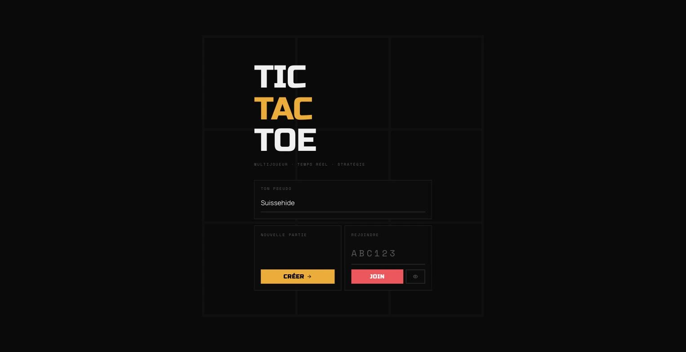
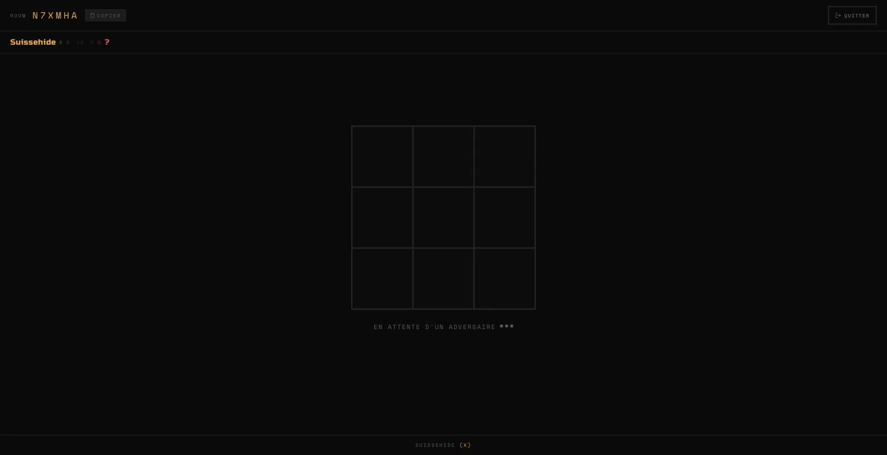
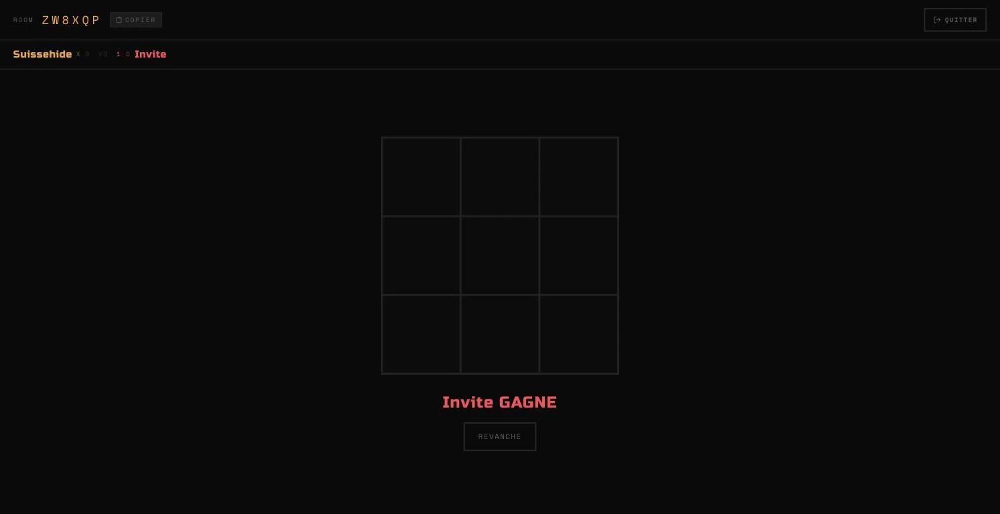

Réalisations
Tic-Tac-Toe
Jeu à deux en temps réel : salons, historique des coups, score et vote de revanche.

Objectif
Un banc d’essai temps réel volontairement réduit : deux joueurs, un salon, un état de partie que le serveur arbitre seul.
Le jeu est simple pour que l’infrastructure soit lisible en entier : appariement, synchronisation, reprise après déconnexion, revanche.
- Salons
- Code à 6 caractères
- Transport
- WebSocket, état arbitré côté serveur
- Robustesse
- Reprise automatique après déconnexion


Architecture
Back Fastify sur un conteneur d’inversion de contrôle, jetons JWT pour l’inscription, la connexion et le rafraîchissement. Chaque message entrant est validé par un schéma avant d’atteindre la logique de jeu.
Front React, TanStack pour l’état serveur et Zustand pour l’état de partie. Une déconnexion ouvre un compte à rebours de reprise au lieu de perdre la partie.